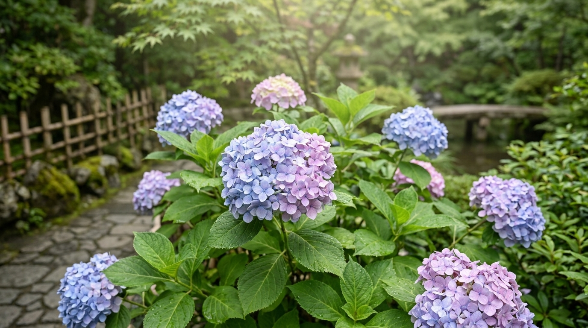

Hortênsia

A hortênsia é uma planta ornamental conhecida por suas inflorescências volumosas, formadas por muitas pequenas flores agrupadas. Suas cores podem variar entre azul, rosa, lilás e branco, dependendo da variedade e das condições de cultivo. Muito apreciada em jardins, ela também aparece em parques e paisagens floridas do Japão, onde contribui para cenários de grande beleza.
História da Hortênsia
A hortênsia pertence ao gênero Hydrangea, que reúne diferentes espécies de plantas conhecidas por suas flores agrupadas em grandes inflorescências. Muitas dessas espécies são originárias do leste da Ásia, incluindo regiões do Japão, da China e da Coreia. Ao longo do tempo, a hortênsia passou a ser cultivada em diferentes partes do mundo por sua aparência ornamental e pela variedade de cores de suas flores.
No Japão, a hortênsia é conhecida como ajisai e está especialmente associada à estação chuvosa, que ocorre no início do verão. Durante esse período, jardins, caminhos e templos podem ficar decorados com suas flores. A combinação entre a chuva, a vegetação verde e as inflorescências coloridas tornou a hortênsia uma presença marcante em muitas paisagens japonesas.
A hortênsia também aparece na arte, na literatura e na fotografia, sendo admirada por suas formas arredondadas e suas tonalidades delicadas. Em algumas representações, suas flores são associadas à gratidão, à beleza e às mudanças, embora os significados possam variar de acordo com a cultura e o contexto. Sua aparência mutável contribui para o interesse que desperta entre artistas e amantes da jardinagem.
Uma característica interessante de algumas hortênsias é que a cor das flores pode mudar conforme a acidez do solo e a disponibilidade de alumínio. Em determinadas variedades, solos mais ácidos podem favorecer tons azulados, enquanto outras condições podem resultar em flores rosadas. Essa mudança, porém, não acontece da mesma forma em todas as espécies e variedades.
Atualmente, a hortênsia é cultivada em muitos países e utilizada na decoração de jardins, parques e arranjos florais. Sua presença nas paisagens japonesas continua sendo uma das razões pelas quais ela é apreciada por quem se interessa pela natureza e pela cultura do Japão.
Clima ideal para a Hortênsia
A hortênsia costuma se desenvolver melhor em regiões de clima ameno, com temperaturas moderadas e umidade suficiente para manter o solo úmido. Muitas variedades apreciam condições semelhantes às encontradas em jardins japoneses durante a primavera e o verão. O clima ideal, entretanto, depende da espécie e da variedade cultivada.
A luminosidade é um fator importante para o crescimento da hortênsia. Em geral, ela se desenvolve bem em locais com luz indireta intensa ou sol suave pela manhã, recebendo proteção contra o sol forte da tarde. Em regiões muito quentes, a exposição prolongada ao calor pode causar murchamento das folhas e aumentar a necessidade de água.
A hortênsia precisa de um ambiente em que o solo conserve umidade sem permanecer encharcado. A chuva e a umidade do ar podem ajudar a planta a se desenvolver, mas o excesso de água nas raízes pode causar problemas. Por isso, é importante escolher um local com boa drenagem e acompanhar as condições climáticas da região.
Em áreas de clima muito quente, cultivar a hortênsia em um lugar parcialmente sombreado pode ajudar a protegê-la durante as horas mais quentes do dia. Em regiões mais frescas, ela pode tolerar uma maior exposição à luz solar, desde que receba água suficiente. Observar a resposta da planta ao ambiente ajuda a encontrar o equilíbrio adequado.
Antes de escolher o local de cultivo, é recomendável pesquisar as necessidades da variedade de hortênsia desejada. Algumas apresentam maior tolerância ao frio, enquanto outras precisam de proteção contra temperaturas extremas. A escolha de um ambiente apropriado favorece o crescimento das folhas e a formação das flores.
Como plantar Hortênsia
A hortênsia pode ser cultivada em jardins, canteiros e vasos espaçosos, desde que tenha espaço suficiente para desenvolver suas raízes e seus ramos. Para começar, escolha uma muda saudável, com folhas firmes e sem sinais evidentes de pragas ou doenças. Também é importante selecionar uma variedade adequada ao clima da região em que será plantada.
O solo ideal deve ser rico em matéria orgânica e capaz de reter umidade sem acumular água em excesso. Antes do plantio, prepare a terra, removendo pedras e partes muito compactadas. A incorporação de matéria orgânica apropriada pode melhorar a estrutura do solo e ajudar a manter condições favoráveis ao crescimento.
Escolha um local com boa luminosidade, de preferência com sol suave pela manhã e proteção contra o calor intenso da tarde. Abra um espaço suficiente para acomodar as raízes da muda e coloque a planta na mesma altura em que estava no recipiente original. Em seguida, complete o espaço com terra e pressione suavemente ao redor da base para firmar a muda.
Depois do plantio, regue a hortênsia para umedecer o solo e ajudar a terra a se acomodar ao redor das raízes. Nos primeiros dias, observe a umidade com frequência, pois a muda ainda estará se adaptando ao novo local. Evite tanto o ressecamento prolongado quanto o encharcamento.
A hortênsia também pode ser cultivada em vasos com furos de drenagem e substrato adequado para plantas ornamentais. Nesse caso, o recipiente precisa oferecer espaço para o crescimento das raízes. Com o tempo, pode ser necessário transferir a planta para um vaso maior. A escolha do local e os cuidados iniciais ajudam a estabelecer uma planta saudável e favorecem o desenvolvimento de suas inflorescências.
Cuidados com a Hortênsia
Um dos principais cuidados com a hortênsia é acompanhar a umidade do solo. A planta precisa de água regularmente, especialmente em períodos quentes e secos. Antes de regar, verifique se a camada superficial da terra começou a secar. A frequência das regas deve considerar a temperatura, a quantidade de chuva, o tamanho do vaso e as necessidades da variedade cultivada.
A luminosidade também merece atenção. Quando recebe sol muito intenso durante as horas mais quentes, a hortênsia pode apresentar folhas murchas ou ressecadas. Um local com luz adequada e alguma sombra durante a tarde pode ajudar a reduzir o estresse causado pelo calor. Ao mesmo tempo, a planta precisa de luminosidade suficiente para crescer e florescer.
A poda pode ajudar a retirar ramos secos, danificados ou mal posicionados, mas deve ser feita considerando a variedade da hortênsia. Algumas florescem em ramos formados no ano anterior, enquanto outras florescem principalmente em ramos novos. Por isso, podar na época errada pode reduzir a floração seguinte. É importante conhecer o tipo de hortênsia antes de realizar uma poda mais intensa.
A adubação deve ser moderada e adequada às necessidades da planta. O uso excessivo de fertilizantes pode prejudicar as raízes e favorecer o crescimento das folhas em detrimento das flores. Utilize produtos apropriados para plantas ornamentais e siga as instruções de aplicação indicadas na embalagem.
Observe regularmente as folhas e os ramos para identificar possíveis sinais de pragas, manchas ou outros problemas. Retire partes secas quando necessário e mantenha o ambiente limpo. Também é importante saber que algumas hortênsias podem ser tóxicas se ingeridas, por isso suas partes não devem ser consumidas e devem ficar fora do alcance de crianças e animais domésticos.
Com regas equilibradas, luminosidade apropriada, solo fértil e podas realizadas no momento correto, a hortênsia pode produzir belas inflorescências e tornar jardins e espaços externos mais coloridos. A observação constante é uma forma simples de perceber as necessidades da planta e adaptar os cuidados às condições do ambiente.